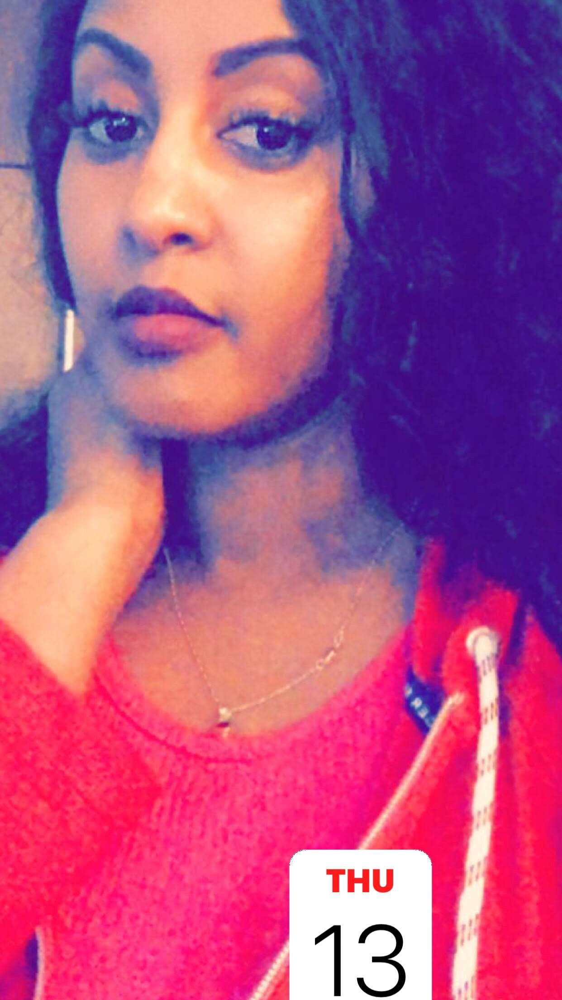

Greetings
My name is Zebib and this website build for the final project of VMD 105. It's a showcase work I have done throughout the semester. My goal is to be visual and graphic designer. I took this class in order to further programmes into the graphic design class.